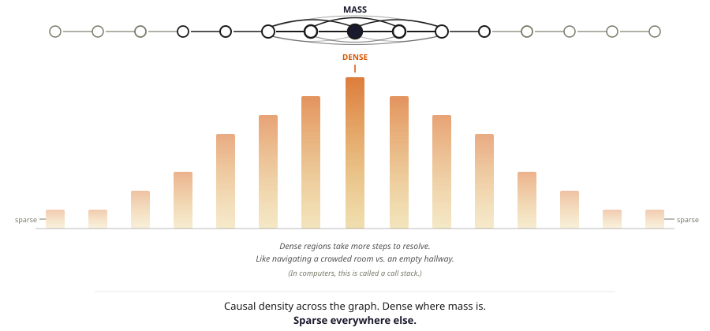
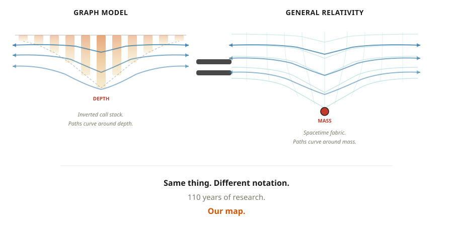
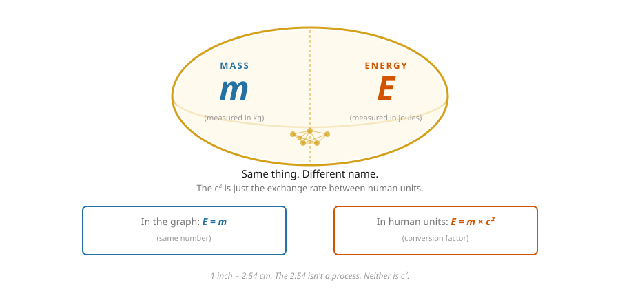
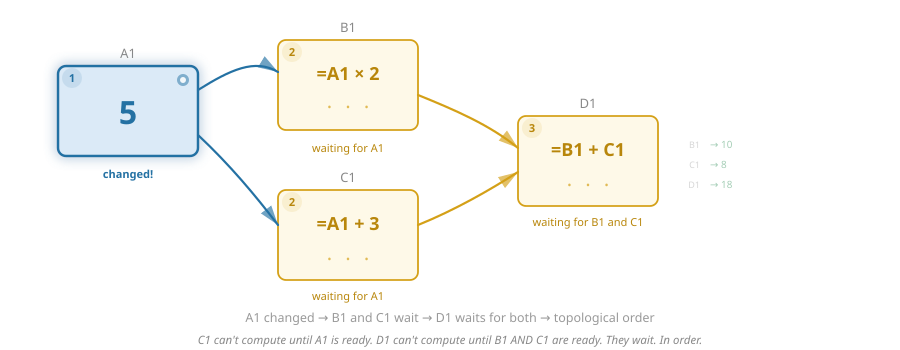
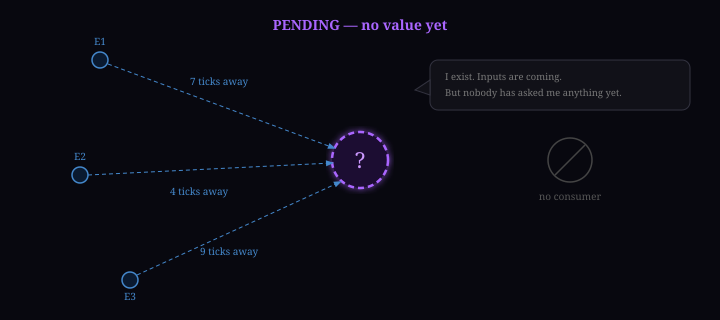
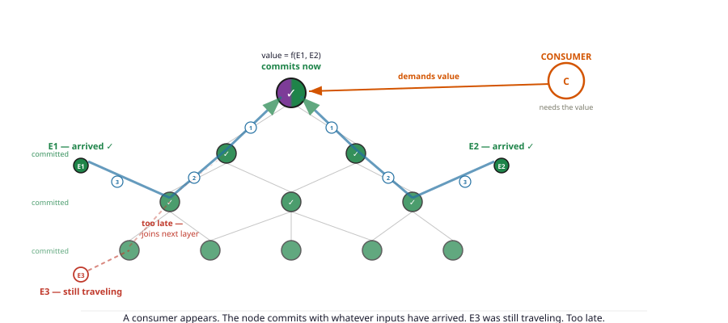
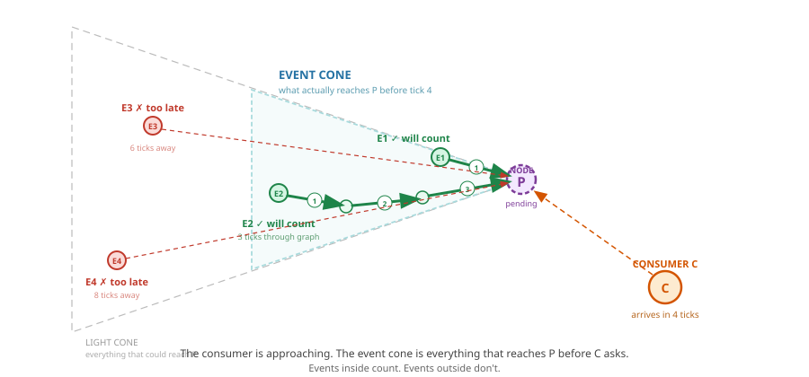
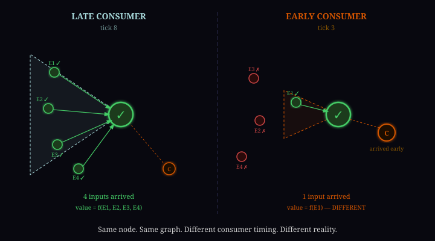
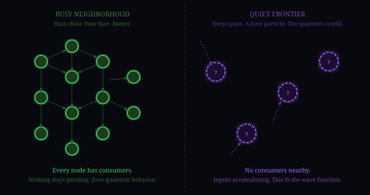

On the surface this might seem odd, to “ponder the universe” as a hobby. But I’d argue it’s actually a well-known fact that the best way to spend ANY amount of time on ANY amount of drugs is to sit back and go “YO BUT what IF LIKE…”
Now as a warning. I have the type of intelligence that seemingly evaded every test ever created by man.
But to quote Good Will Hunting, “I can’t paint you a picture, I can’t hit the ball out of Fenway, and I can’t play the piano, but when it comes to wild imaginative theories on a subject I hardly know... I could always just play.”
I would imagine having a passion for a subject you can’t fully grasp is all that is really needed for the seeds of AI psychosis to truly take hold.
But this special little “hobby” of mine started with one question: is anything truly random? Is there any event in this universe that does not depend on the events that came before it? If I could rewind time and flip a coin again and again, will it always land heads? This bugged me so I looked into it and like a true tism 9 years later here we are.
Now, I KNOW the odds that someone gets committed rise significantly the moment they start saying “I have a theory of the universe.”
So to get ahead of whoever plotted to get Kanye — here’s what this actually is.
This is my best guess on how it could all work. These are some of the greatest mysteries of life and I think everyone should have some version of this in their own head.
The odds of my version being at all right are as close to zero as something can be. But if even one concept inspires a thought in someone more capable, even if born out of pure opposition, then I’d consider that a win.
At the very least, having a link to this on the World Wide Web makes it easy to send an advanced briefing for any dinner party I should be expected to attend in the future.
Cheers,
A Very Serious Person (Greg)
Along the way of writing this, my views changed dramatically. With each version of “oh maybe it works like this” I would hit a wall — and the solution to that wall was, surprise surprise, some piece of existing theory. So this article is very much the process of me coming to appreciate what we already know. And when I say those guys BALL, I mean they BALL.
The foundation here draws heavily from causal set theory, Wolfram’s project, and loop quantum gravity. If this piques your interest, start with those. They have the math we don’t.
Chapter 1: You Are Mario
Physics has two main theories. General relativity describes the big stuff — gravity, black holes, how the universe is shaped. Quantum mechanics describes the small stuff — atoms, particles, all the tiny weirdness. They are the two most successful theories in the history of science.
The problem is they completely contradict each other. Nobody knows why.
You are Mario. Not metaphorically. Your reality is taking place on a screen. There is a structure underneath that represents your world, and you have no direct access to it.
This sounds strange. But you deal with two-layer systems every day. Your monitor shows letters. Your computer stores ones and zeros. The letters are real — you’re reading them right now. But what’s actually stored looks nothing like what you see.
We’re saying reality works the same way. What you experience — solid objects, definite positions, the world — is the output. It’s produced by something underneath that you cannot see and have never touched.

Now here’s what makes this more than a fun idea. When you accept that reality has two layers, a whole list of genuinely weird things stop being weird. Things like:
- Why can’t anything travel faster than light? Every other speed limit has a reason. This one just... is.
- Why can’t you shield gravity? Got radiation? Lead stops it. Electromagnetic field bothering you? Faraday cage. Gravity? Nothing. Nobody has ever shielded gravity. Not once.
- Why does looking at something change it? Not touching it. Not bumping it. Just looking.
- Why do two particles on opposite sides of the universe give correlated answers instantly?
- Why does time slow down near a black hole? Yes — this is real. How fast time passes actually changes depending on where you are. Your phone corrects for this every single day or your GPS would be wrong by 10 kilometers.
- At what age can a man know for sure that he won’t go bald?
These are real experimental results that our best theories describe but don’t explain.
In my version of what’s going on, most of them dissolve. Not because I’m smart — because the structure underneath, once you name it, does the work.
The structure is a graph. A graph is just dots connected by lines. You already know what one looks like.

Chapter 2: You Already Live in One
Here’s the twist. And I want you to feel it land.
You already believe in spacetime. Every physics textbook printed in the last hundred years talks about it. Einstein made it famous. It’s the fabric of the universe — the thing that bends near black holes, the thing that makes clocks run slower near heavy objects.
You accept all of that.
Here’s the question nobody ever answers:
What IS spacetime? What is it made of?
John Archibald Wheeler — the physicist who named black holes — gave us the most famous summary of Einstein’s theory: “Matter tells spacetime how to curve, and spacetime tells matter how to move.”
Beautiful sentence. But read it again. It tells you what spacetime does. It doesn’t tell you what spacetime is. What is the fabric? What is the thing that curves?
Nobody says. Everyone just moves on.
I’m saying it’s a graph. And if that’s even close to right — here’s the part that took me embarrassingly long to see — then we already have a hundred and ten years of research telling us exactly how it works. We just never named the thing being studied.
You’ve been living in a graph your whole life. You already accepted that you can’t see it. You already accepted that it bends and warps. You were just never told what it was made of.
It’s dots and lines.
The Rules
So what does this graph look like? Three rules. Simple version.
Rule 1 — The dots are events. Not points in space — events in spacetime. A thing that happened, at a place, at a time. You can’t separate the where from the when. A node doesn’t have a position inside the graph. A node IS a position. Its place is defined entirely by what it’s connected to.
Rule 2 — The lines point forward. A line from dot A to dot B means: A happened before B, and A could have influenced B. The lines carry the direction of cause and effect. Past to future.
Rule 3 — The graph grows. New events are born as the product of old ones. That birth — a new dot appearing — is one tick of time. Time isn’t a river you float down. Time is new dots being born. No new dots, no time.


So What Do 110 Years Tell Us?
If the graph is real — if spacetime really is dots and lines — then every experiment ever run has been measuring properties of this graph without knowing it. And a hundred and ten years of results paint a remarkably consistent picture.
Speed limit. Nothing travels faster than one hop per tick. That’s c. Not because there’s a cosmic speed enforcer — because there’s no mechanism to skip a connection. You can’t jump three edges in one tick any more than you can skip three steps on a staircase in one step.
Minimum size. One hop is the smallest possible distance. You can’t travel half an edge. The graph is discrete. This is the Planck length — the bottom of the ruler.
No grid. The graph isn’t a neat, tiled lattice. Real graphs are organic — irregular, tangled, messy. If spacetime were a grid, physics would look different depending on which direction you faced. It doesn’t. That means the underlying structure isn’t tiled. It’s organic.
3+1 dimensions. Three dimensions of space plus one of time. In the graph: three spatial directions emerge from the connectivity pattern. Time is the growth direction — new nodes being born. Not a fourth spatial axis. A fundamentally different thing.
Mass equals energy. A self-perpetuating topology. Call it mass when you weigh it. Call it energy when you release it. Same thing, different name. More on this shortly.
Shortcuts exist. Two points that look far apart on the surface might be direct neighbours in the graph. The surface says “far apart.” The graph says “one hop.” This matters. A lot.

The Planck length (~1.6 × 10−35 metres) and Planck time (~5.4 × 10−44 seconds) are the smallest meaningful measurements in physics — below them, our equations break down. In graph terms, these are simply the length of one edge and the duration of one tick. The graph can’t be subdivided further because there’s nothing smaller than a single connection. The Planck scale isn’t where physics gets weird. It’s where you hit the resolution of the structure.
Our Computers Already Do This
Here’s the part that should make you trust this a little more. We already build systems that work exactly like this. Every day.
Your computer doesn’t evaluate things randomly. It follows the shape of the graph. When you open a spreadsheet and change cell A1, the spreadsheet doesn’t update every cell at once. It follows the dependencies. B1 depends on A1, so B1 updates first. D1 depends on B1 and C1, so D1 waits for both. The order of evaluation isn’t programmed in — it falls out of the shape of the graph.
The internet works the same way. When your phone loads a webpage, the data doesn’t teleport. It hops through routers. Each router looks at the graph of connections and sends the packet along the cheapest path. That routing — cheapest path through a graph — is literally how your packets get from a server in Virginia to your phone. No one programmed the route. The shape of the network determines it.

This is important. The rules aren’t hard-coded in. There is no line of code that says “gravity pulls things down.” There is no routing table that says “send packets this way.” There is no spreadsheet engine that says “evaluate D1 last.” The behavior emerges from the structure. The shape of the graph determines what happens.
Now flip the density profile upside down — make it a well instead of a mountain. Draw paths through it. They curve around the depth. Sound familiar?

You don’t need to take my word for any of this. Your own computer already proves the principle. Spreadsheets evaluate in dependency order. The internet routes around expensive paths. Call stacks trap computation and create pressure. None of these behaviors are programmed in — they all emerge from the shape of the graph. The universe does the same thing. We just never noticed because we were inside it.
The Speed Limit
When something happens at a node, that change doesn’t instantly affect the whole graph. It spreads outward — one connection at a time. That rate is C. The speed of light.
Not the speed of light specifically — the speed of anything. The speed of cause and effect. The speed that information can travel. Light moves at that speed because it’s the simplest possible pattern — nothing to slow it down.

The speed of light isn’t about light. It’s the speed that changes spread through the graph — one connection per tick. Light moves at that speed because it’s the simplest pattern. There’s nothing to slow it down.
Chapter 3: How It Works
Mass Is a Loop That Won’t Stop
If dots are events, what is a particle? What is an electron? What is you?
A particle can’t be a single dot — dots are events, and events don’t persist. Every moment you are a new event. So a particle must be a pattern. A shape in the graph that reproduces itself as new dots are born, tick after tick.
Think of a wave in the ocean. The water doesn’t travel across the ocean. The pattern does.
Now there are two kinds of patterns.
Simple patterns have no internal structure. A photon is this — a chain of edges marching forward in a straight line. Nothing to maintain. Every tick, all of its computation budget goes toward moving forward. Maximum speed. C.
Complex patterns have a self-perpetuating topology — a knot. Think of it like a standing wave: a shape that isn’t physically moving in a circle, but whose internal edges sum to reproduce the same structure every tick. The knot persists not because something is cycling — but because the operations on those edges, when you add them all up, produce the same topology again.
That self-perpetuating topology is mass.

Not a property stored somewhere. Not a number on a tag. A topology. A shape. A pattern that keeps reproducing itself because the edge operations sum back to the same structure. The particle persists because the topology is self-reinforcing. Destroy the topology and the particle ceases to exist.
Mass is not a property. It is a self-perpetuating topology — a knot of edges whose operations reproduce the same shape every tick. The heavier the particle, the more complex the topology, the more computation budget spent maintaining it, the slower it moves.
In loop quantum gravity, particles correspond to topological features of the graph — persistent structures in the evolving geometry. We’re making the same claim: different particles are different loop topologies. The particle zoo might be a complete catalogue of loop structures the graph can sustain. Unstable topologies decay into simpler ones. Particle decay is a loop that can’t maintain itself unwinding into simpler structures.
E = mc² — It’s an Identity
You’ve seen the equation. You’ve nodded at it. You almost certainly think it describes a conversion — mass turning into energy. Some violent process. A bomb.
It doesn’t. It says mass and energy are the same thing. Literally the same number, measured in different units.
In the graph, a massive particle is a self-perpetuating topology — a knot of edges whose operations reproduce the same structure every tick. That topology IS the particle. Measure it in kilograms and call it mass. Measure it in joules and call it energy. You haven’t changed anything. You’ve changed the ruler.

In natural units — the units physicists actually use when they’re not trying to be understood by the rest of us — c equals 1. The equation becomes E = m. Same number. Same thing. The c² only appears because humans invented separate units for mass and energy before realising they’re identical.
1 inch = 2.54 cm. The 2.54 isn’t a process. It isn’t a mechanism. It’s just the exchange rate between two ways of measuring the same length. That’s what c² is. The exchange rate between kilograms and joules.
So what happens when you annihilate a particle?

E = mc² is not a conversion. It’s an identity. Mass and energy are the same thing measured in different units. The c² is a unit conversion factor — like inches to centimetres. When a particle annihilates, nothing is converted. The knot unravels. Same edges, different arrangement.
Why c² and not just c? Dimensional analysis. Energy has units of kg·m²/s². Mass has units of kg. To convert between them you need m²/s² — which is a velocity squared. The speed of light is the only velocity the graph provides (1 hop per tick). So the conversion factor is c². It’s not that two things are happening at c. It’s that the unit conversion between kilograms and joules happens to require a velocity squared, and the graph only has one velocity to offer.
Gravity — The Tax You Can’t Avoid
Three clues that something is off about gravity:
- You can shield every other force. Radiation — lead. Electromagnetic fields — Faraday cage. Gravity — nothing. Not once, anywhere, ever.
- Einstein showed gravity and acceleration are identical. Standing on Earth feels exactly the same as accelerating in a rocket at 9.8 m/s². Why would a force feel the same as motion?
- Physicists have hunted the graviton — the particle that carries the gravitational force — for nearly a hundred years. Never found one.
Three clues. One answer.
Gravity isn’t a force. It’s the shape of the computation.
A massive particle is a dense topology — lots of internal steps, lots of connections, a complex region of the graph. That density makes paths through it expensive. More hops to traverse. Meanwhile, paths around it are cheaper.
At each tick, the next state follows the cheapest available path. Not because anything is choosing — because that’s how graphs evaluate. Like water finding the path of least resistance.
Dense region = expensive paths through it = cheap paths curve around it. Objects following those cheap paths appear to curve toward the mass. That curve is gravity.

The three mysteries dissolve:
Why you can’t shield gravity: Gravity isn’t a signal traveling through the graph — it IS the density of the graph. Adding a shield adds more nodes, more connections, more density. Every attempt to block gravity makes it stronger. Like trying to reduce traffic by adding more cars.
Why gravity equals acceleration: Accelerating rapidly creates dense local structure. Dense structure IS curvature IS gravity. Same thing, same cause.
Why there’s no graviton: “What particle carries gravity?” is like asking “what particle carries the shape of a triangle?” There is no particle. Gravity IS the structure.
Gravity is routing pressure. Dense topology makes some paths expensive. The graph follows the cheapest path. That curve is gravity. You can’t shield it because a shield is more density — you’re making it worse.
Near a massive object, the graph has more connections per region — denser terrain. A pattern traversing that terrain needs more hops per cycle, so its internal clock runs slower. This isn’t theoretical — GPS satellites orbit where Earth’s gravity is weaker. Their clocks run faster than clocks on the surface by 45 microseconds per day. Without correcting for this, your GPS would drift 10 km per day. Your phone depends on this being real.
The Rest of the Lineup
| Mystery | What you were told | What it is in the graph |
|---|---|---|
| Speed of light | How fast light goes | Rate changes spread: 1 hop per tick. Nothing special about light — it’s the simplest pattern |
| Space | A box things happen inside | The graph’s shape. Distance = hop count. Minimum distance = 1 hop = Planck length |
| Time | A dimension you move through | New nodes being born. No births = no time |
| Time dilation | Mysterious relativistic effect | Near mass: denser graph, more hops per cycle, pattern’s clock runs slower |
| Arrow of time | Something about entropy | You can’t un-birth a node. Growth is irreversible |
| Universe expanding | Space stretching somehow | More nodes = more places for new nodes. Growth feeds growth |
| Black holes | Infinite singularity | Density so extreme no path leads outward. Not infinite — just one-way |
Chapter 4: The Punchline
Everything so far has been setup. This is what it was building to.
The Spreadsheet
Before quantum mechanics, think about spreadsheets for one second.
Cell D1 has a formula: =B1+C1. Now imagine B1 references another cell that hasn’t been calculated yet. What does the spreadsheet do?
It waits. It doesn’t guess. It doesn’t make something up. It sits there, pending, until the input arrives. Then — and only then — does it compute.

Remember that. We’re coming back to it.
A Node Is Born
Picture the very edge of the graph. The frontier. A new event has just been born — a new dot, produced by the events before it. It exists. It has parents. It has lines connecting it to the past.
But nothing is downstream of it yet. Nothing needs its value as an input.
So what does it do?
It waits.
The value does not exist yet. Not “exists but is hidden.” Not “exists but we can’t measure it.” The function hasn’t been called. Nobody asked. There is no answer right now because right now nothing needs one.
That is not a measurement problem. That is not philosophy. That is just how every spreadsheet on Earth works.
The Consumer
What forces a node to finally commit — to produce a value?
A consumer — any downstream event that needs this node’s value to compute its own. The moment something new is born that requires this node’s answer as an input, the node must commit. It sums all the inputs that have arrived along its edges at that moment, runs the computation, produces a value, turns green. Immutable. Forever.
This is important so let me say what it isn’t.
It isn’t consciousness. It isn’t a physicist in a lab coat. It isn’t observation in any mystical sense. It is simply any event in the graph that needs the answer. A detector is a consumer. Your eyeball is a consumer. A neighboring atom is a consumer.


The Event Cone
You may have heard of the light cone — all events that could ever reach you given the speed of light. Your entire possible past.
The event cone is different. Narrower. It’s not everything that could reach you. It’s everything that reaches you before your consumer arrives.
Same node. Consumer arrives early — small event cone, fewer inputs, one result. Consumer arrives late — larger event cone, more inputs, different result. Same dot in the graph. Different consumer timing. Different reality.



The event cone is narrower than the light cone. It’s not what could reach you — it’s what reaches you before you’re forced to answer. When you’re asked determines what counts.
Superposition — The Cheque in the Mail
This is where people’s eyes glaze over. “The particle is in two places at once.” “The cat is both alive and dead.” Let me try something different.
Imagine you’re broke. Zero dollars in your bank account. Now two things happen at once: you write someone a cheque for $20, and your buddy says he owes you $40 and wire transfers it to you.
You don’t know how long the wire transfer will take to arrive. One day? Three days? You have no idea.
Right now, that cheque you wrote? It might bounce. Or it might clear. You genuinely don’t know. You’re in superposition. Not because the universe is being weird — because events are still in transit and you don’t know the order they’ll land in.
Now your friend goes to cash the cheque. That’s the consumer. The bank has to commit — does the $40 arrive first, or does the cheque hit an empty account?
If the wire lands first: cheque clears. If the cheque hits first: it bounces. The events were always going to unfold exactly the way they did. The wire was always going to take however many days it took. The cheque was always going to be cashed when it was cashed. Nothing random happened. You just didn’t know the order because you couldn’t see the whole system.
That’s quantum mechanics. A node with inputs still in transit, being asked for its value before everything arrives.
Two Very Different Neighborhoods
Now look at two very different parts of the graph.

Deep inside the graph — in dense matter — every node is surrounded by neighbors constantly needing answers. A node barely exists before something asks it. It commits with whatever inputs it has. That’s the classical world. Your chair. Your face.
Out at the frontier, nodes are sparse. A node can sit there, pending, for millions of ticks. Events from distant regions keep arriving slowly. The node keeps accumulating inputs. But nothing nearby needs its value yet.
This is where quantum behavior lives. Not because different laws apply. Because nothing is asking.
Quantum mechanics is what nodes look like when nothing has asked yet. Classical physics is what nodes look like when everything is always asking. Not different laws. Different neighborhoods.
In standard quantum mechanics, “decoherence” explains why quantum behavior vanishes at large scales — a quantum system entangled with a large environment rapidly loses its superposition. In graph terms: large environments are busy neighborhoods with consumers at every tick. Nothing stays pending. The math gives the same answer. We’re just describing the structure rather than the statistics.
Now Apply It
The double slit. A photon spreads through the graph — both slits are open paths. The screen node accumulates inputs from both paths simultaneously. Different path lengths mean different accumulated transformations. When the screen demands a value, both paths combine. They reinforce at some positions, cancel at others. Interference pattern.
Add a detector at one slit. The detector is a consumer. It forces early commitment at slit A before those nodes reach the screen. The precise relationship between path A and path B at the screen is broken. No interference. The detector didn’t block anything — it became a consumer and forced early commitment.
The double-slit experiment fires particles one at a time at a barrier with two slits. Each particle lands at a single point on the screen behind it. But over thousands of particles, the dots form an interference pattern — bands of high and low density — as if each particle went through both slits simultaneously and interfered with itself. Place a detector at one slit to learn which slit the particle went through, and the interference pattern vanishes. The particle behaves as if it only went through one slit. This has been confirmed with photons, electrons, atoms, and even large molecules.
Entanglement. Two particles share a common causal history — common ancestor nodes, shared transformations. They separate. Both pending. When you measure particle A, it commits — tracing back through shared ancestors. When you measure particle B later, it commits — same shared ancestors, complementary transformations. Correlated values. Not because A sent a message to B. Because both computations trace back to the same root.
No faster-than-light communication. Sealed envelopes from the same deck.
The quantum eraser. Detector applies transformation O. Eraser applies O−1. Combined: identity. Net effect at the screen: as if the detector never happened. Interference returns. Nothing was erased. Nothing traveled backward in time. Two transformations that cancel each other out. The most confusing experiment in physics is function composition.
In the quantum eraser experiment, a detector at one slit records which-path information, destroying the interference pattern. Then an “eraser” device downstream removes that which-path information. When you filter the data by the eraser’s outcome, the interference pattern reappears — even though the detector already fired. Standard physics says the eraser “retroactively” changed the result. In graph terms: the detector applied a transformation, the eraser applied the reverse transformation. They cancel. The screen sees the same structure as if no detector existed. Nothing was erased. Nothing went backward in time. Two operations that compose to identity.
Tunneling. A particle hits a wall it shouldn’t be able to cross. Classically, it bounces. Quantum mechanically, it sometimes appears on the other side. Spooky? Only if you assume the wall is solid in the graph. But the graph doesn’t care about your walls. Two nodes that look “far apart” in emergent space might be direct neighbours in the graph — connected by a single edge that doesn’t follow the surface geometry. The particle doesn’t go through the wall. It takes a shortcut that the wall doesn’t cover. One hop, one tick, and it’s on the other side.
Quantum tunneling is measured in every semiconductor on Earth — your phone depends on it. Alpha decay, scanning tunneling microscopes, and nuclear fusion in the sun all require particles to traverse classically forbidden barriers. The standard treatment uses a decaying exponential wavefunction inside the barrier. In graph terms: the probability drops because few graph edges cross the barrier region — but some do. The tunneling rate depends on how many shortcut edges exist, which maps to barrier width and height.
Why basketballs don’t do this. You are 1026 atoms. Every atom has consumers. Every tick, something needs its value. Nothing stays pending. Nothing accumulates interesting inputs. The graph commits everything immediately. Zero quantum behavior. Not a small chance. Zero.
Quantum mechanics is not spooky. It is not random. It is a node that hasn’t been asked yet — a function with inputs still on their way. The moment something needs its value, it commits, and it was always going to give exactly that answer. You just couldn’t see it coming because you’re inside the graph.
Bell’s theorem (1964) proves no theory of local hidden variables can reproduce quantum correlations — specifically the violation of the CHSH inequality. Our response: node values are not predetermined hidden variables. Values don’t exist until commitment. But the graph’s topological structure — including shared causal history — is predetermined back to initial conditions. Whether this constitutes “local hidden variables” in Bell’s sense is genuinely open. Reproducing the exact cos²(θ) correlation function from graph topology is unsolved. It is the single most important quantitative gap in the framework.
Honest Gaps
A framework that claims to explain everything without saying where it breaks is a story, not a theory. Here’s where this one breaks.
The number one problem. Gravity as routing pressure is a compelling analogy. Without the derivation, that’s all it is.
A graph has preferred directions. Explaining why physics looks the same from all angles — to 10−20 precision — requires a solution borrowed from causal set theory that we haven’t derived ourselves.
Why does quantum probability equal |amplitude|²? If values are determined by structure, what produces exactly that distribution? Unsolved in most interpretations of QM. We’re in good company but that’s not an excuse.
The structural argument is made. The specific numbers are not derived.
What are the operations on the edges? What symmetry group governs them? This is the gap between a framework and a theory.
Any of the first three could be fatal. That’s fine. You lay out what you think, you say where it breaks, and you hope someone smarter gets further.
Wild Guesses (Clearly Labeled)
If the framework is right — or even close — it might hint at some open questions. These are guesses. Enjoyable ones, but guesses.
The Standard Model as a topology catalogue. If particles are stable loops, the particle zoo might be a complete catalogue of loop structures the graph can sustain. Only certain topologies are self-reinforcing. The rest decay.
Dark matter as a topology without a consumer. What if dark matter is a self-perpetuating topology that never adjoins with the visible graph? It has internal structure — mass — so it exerts routing pressure — gravitational effect. But it never commits into the layer we can detect. Not invisible matter. Matter that exists in the graph but has no consumer in our region. This would explain why dark matter has gravitational effects but no electromagnetic interaction, no direct detection, no visible output.
Dark energy as frontier pressure. The graph keeps growing. New nodes create new places for newer nodes. The routing pressure at the expanding frontier — the tendency of the graph to propagate outward — might be what we’re measuring as dark energy. Not a force. Just the graph growing, with the edges always being the last place anything committed.
These speculations are not new territory. Causal set theory, loop quantum gravity, and Wolfram’s hypergraph project have all explored discrete spacetime with similar implications. The Standard Model symmetry groups would need to emerge from the graph’s topological update rules — partial progress exists in loop quantum gravity’s spin network approach. All three require serious mathematics before they become more than suggestive analogies.
Technical Summary
GL Theory — Technical Position
Core claim: Spacetime is a directed graph of discrete events connected by causal edges carrying algebraic operations. The causal structure is acyclic — effects cannot precede their causes — but the spatial subgraph may contain cycles. Those cycles are mass. The graph grows: new nodes are produced as functions of their causal predecessors. Node values are lazily evaluated — computed only when demanded by a downstream consumer. Causal influence propagates at C: 1 edge per tick maximum.
Relationship to existing work: This framework operates within discrete quantum gravity — specifically causal set theory (Bombelli et al., 1987), loop quantum gravity (Rovelli, Smolin), and Wolfram’s hypergraph physics project (2020). The novel framing, if any: nodes as thunks, commitment as forced evaluation by a consumer, the event cone as distinct from the light cone. Standard decoherence theory describes the quantum-to-classical transition statistically; this describes it structurally.
Six axioms:
- Nodes are spacetime events — where and when, inseparable.
- Edges are directed causal relations carrying operations.
- The graph grows: new nodes born as edge-operation products of existing nodes. Growth IS time.
- Node properties derive entirely from position — from paths reaching the node and their accumulated operations. Nodes store nothing.
- Changes propagate at C: 1 edge per tick maximum.
- Nodes are pending until demanded by a consumer. Pending nodes accumulate inputs as events arrive. Commitment freezes inputs and computes the value. Committed nodes are immutable.
What is claimed vs derived:
- Time dilation: qualitatively derived from causal density. Consistent with GPS corrections to ~10−10. Not formally derived.
- Gravity as routing pressure: structurally consistent with GR geodesics. Einstein field equations not derived.
- Mass as self-perpetuating topology: consistent with LQG particle models. Spatial cycles whose edge-operation products reproduce the same topology each tick. No mass spectrum derived.
- Measurement as consumer-forced commitment: structurally reproduces decoherence. Born rule not derived.
- Bell correlations via shared causal topology: structural argument only. cos²(θ) not derived.
- Tunneling as graph adjacency: edges need not respect emergent spatial geometry. Two nodes “far apart” on the surface may be graph neighbours — a particle can traverse that edge in one tick. This is tunneling.
Potentially fatal gaps: (1) Einstein field equations not derived. (2) Lorentz invariance requires Poisson sprinkling from causal set theory — borrowed, not derived. (3) Born rule unexplained. (4) Edge algebra unspecified. (5) Bell inequality violation not quantitatively reproduced.
Prior art to engage: Causal set theory · Loop quantum gravity · Wolfram physics project · Penrose spin networks · ’t Hooft cellular automaton interpretation.
How I Got Here
It started with a question: is anything actually random?
If there is no truly random thing in the universe — if it only appears random to me — then everything that is going to happen is already predetermined. Not that I can’t make a choice. But that the choice I will make depends on the sum of all my life experiences, which depends on my parents’ experiences, which depends on theirs, all the way back.
So I set out to hunt for random. Surely it’s somewhere.
That led me to the quantum world — where some say the double-slit experiment is random. The moment I saw that, I hated the idea instantly. I am a conscious being. I have free will. Hearing that my photon is randomly appearing somewhere? That didn’t sit right. “God doesn’t play dice.” So here we are.
And it’s not just photons. Quantum mechanics says that when you sit down on your chair there is a non-zero chance it won’t be there. The probability is vanishingly small. And people just kind of accept this.
I’m saying no.
In my version, the second you go to sit on that chair, every atom in it is demanded by every atom around it. The graph commits. The result is definite. Zero percent chance you go through it. Not a very small chance. Zero. Interaction means commitment. Committed results are real. Every time.
And what about the photon? It wasn’t randomly appearing somewhere. It was a function with inputs still on their way. Events were spreading through the graph from every direction, and the photon hadn’t been asked yet. When the detector demanded its value, the inputs froze, the transformations combined, and the answer came out. Determined. The same answer it was always going to give, given the structure. You just couldn’t see it coming because you’re inside the graph and information travels at C.
I’d rather be Mario than accept random.
I don’t know what that means for free will. Maybe every choice I make depends on every event that came before it and none of it was random. Maybe the structure from the Big Bang fully determines every event that will ever happen, including me typing this sentence. The framework doesn’t tell me which one it is. It just says the graph grows, changes spread at C, nodes accumulate inputs, and interactions force commitment.
The odds that any of this is right are as close to zero as something can be. But if even the shape is right — if spacetime really is a graph, if gravity really is routing pressure, if quantum mechanics really is what happens when a node hasn’t been asked yet — then maybe that shape helps someone who actually knows what they’re doing get a little further.
And if not, at least I finally understand why those guys BALL.